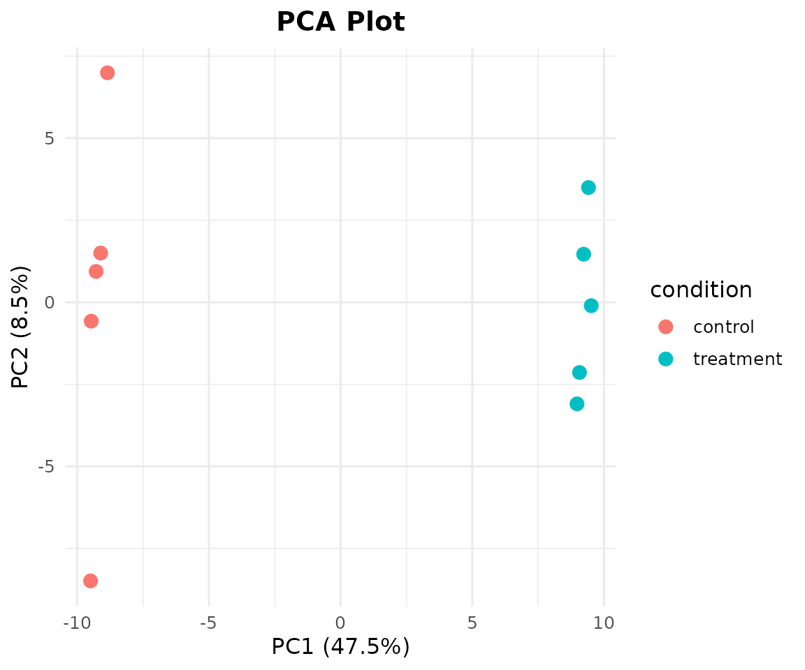
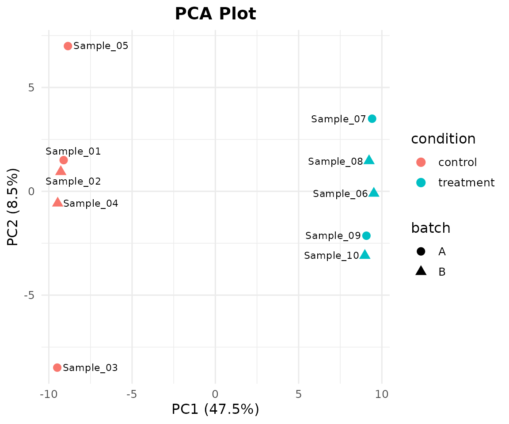
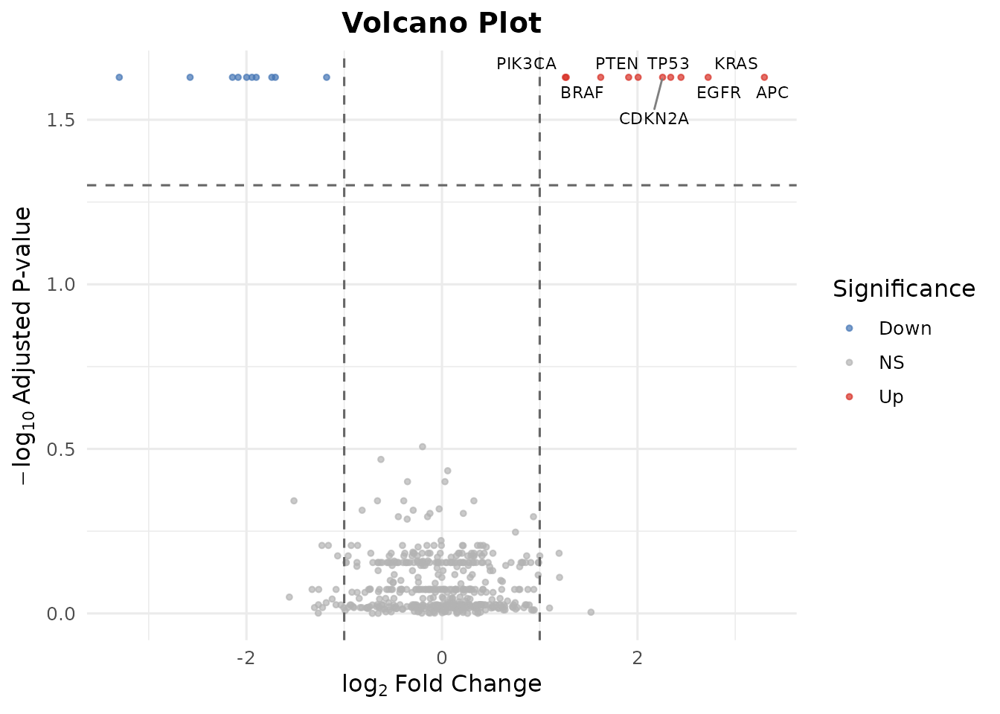
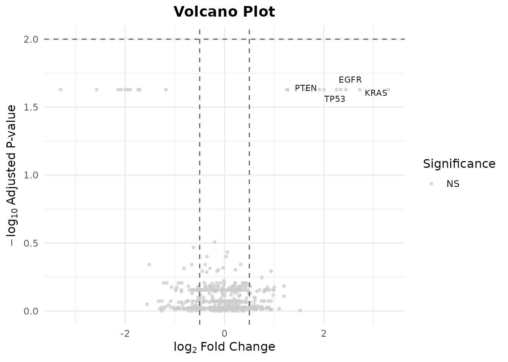
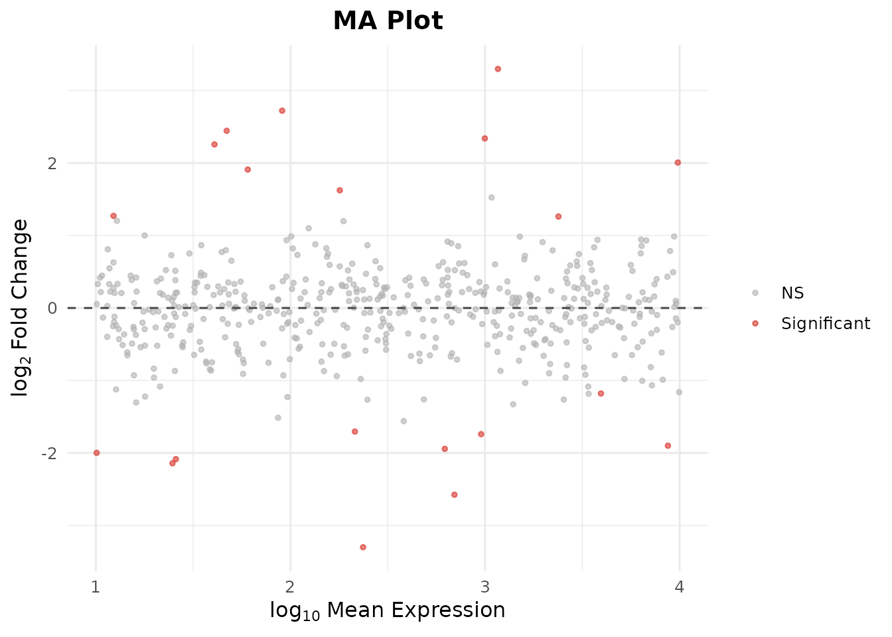
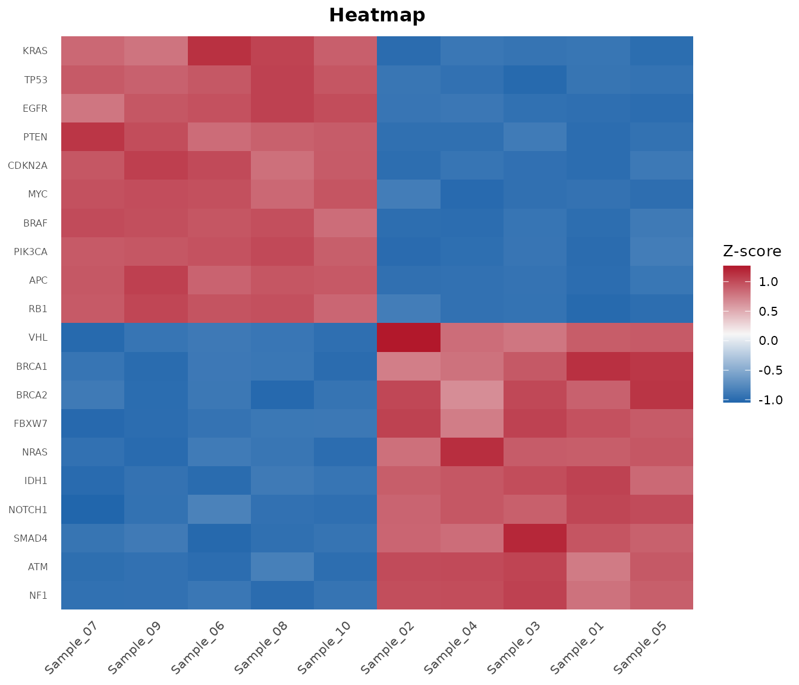
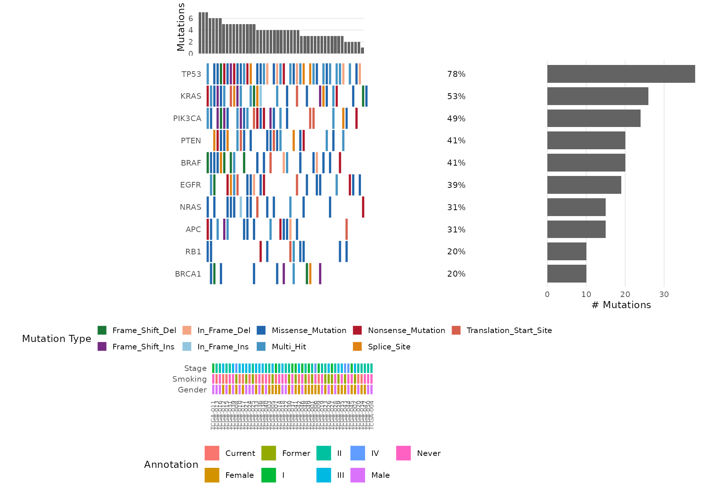
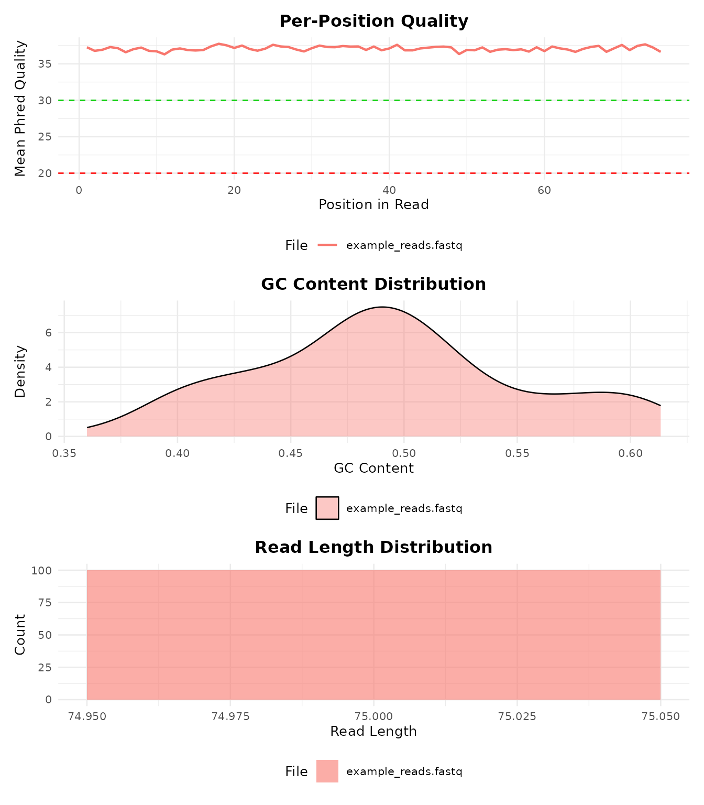

Overview
bambamR is an end-to-end RNA-seq analysis toolkit that takes you from raw sequencing data (FASTQ/BAM) through alignment, counting, normalization, differential expression, and publication-ready visualizations.
It operates in two modes:
- Minimal mode (CRAN-only): CPM/TPM normalization, all plots, FASTQ import via base R, and system tool wrappers. No Bioconductor needed.
- Full mode (+ Bioconductor): DESeq2/edgeR/limma DE analysis, TMM/RLE normalization, native BAM/FASTQ parsing via Rsamtools/ShortRead.
This vignette walks through a complete analysis using only the bundled example data – no external files required.
Installation
# CRAN
install.packages("bambamR")
# GitHub development version
pak::pak("rabanheller/bambamR")
# Optional Bioconductor packages for full mode
BiocManager::install(c("DESeq2", "edgeR", "limma", "ShortRead", "Rsamtools"))Step 1: Load Example Data
bambamR ships with three example datasets accessible via convenience functions. Nothing to download – they are bundled with the package.
# RNA-seq count matrix: 200 genes x 10 samples (5 control, 5 treatment)
ex <- bb_example_counts()
counts <- ex$counts
metadata <- ex$metadataLet’s inspect the data:
dim(counts)
#> [1] 200 10
counts[1:6, 1:5]
#> Sample_01 Sample_02 Sample_03 Sample_04 Sample_05
#> TP53 525 533 485 515 519
#> KRAS 502 471 498 510 475
#> EGFR 479 504 488 514 473
#> BRAF 454 456 481 453 497
#> PIK3CA 470 469 506 483 532
#> PTEN 461 473 513 475 479
metadata
#> condition batch sex age
#> Sample_01 control A M 45
#> Sample_02 control B F 52
#> Sample_03 control A M 38
#> Sample_04 control B F 61
#> Sample_05 control A M 55
#> Sample_06 treatment B F 47
#> Sample_07 treatment A M 59
#> Sample_08 treatment B F 42
#> Sample_09 treatment A M 50
#> Sample_10 treatment B F 44The metadata has columns for condition (control vs. treatment), batch, sex, and age. The first 20 genes in the count matrix have simulated differential expression between conditions.
Step 2: Normalization
CPM normalization works everywhere – no Bioconductor needed:
cpm <- bb_normalize(counts, method = "cpm")
head(cpm[, 1:3])
#> Sample_01 Sample_02 Sample_03
#> TP53 5286.849 5348.076 4852.766
#> KRAS 5055.235 4725.974 4982.840
#> EGFR 4823.621 5057.093 4882.783
#> BRAF 4571.866 4575.465 4812.743
#> PIK3CA 4732.989 4705.906 5062.886
#> PTEN 4642.357 4746.042 5132.926TPM normalization requires gene lengths (also bundled):
gene_lengths <- readRDS(
system.file("extdata", "example_gene_lengths.rds", package = "bambamR")
)
tpm <- bb_normalize(counts, method = "tpm", gene_lengths = gene_lengths$length)
head(tpm[, 1:3])
#> Sample_01 Sample_02 Sample_03
#> TP53 1663.711 1692.779 1537.197
#> KRAS 4554.768 4282.901 4519.196
#> EGFR 1089.000 1148.358 1109.638
#> BRAF 3353.235 3375.418 3553.223
#> PIK3CA 1120.653 1120.729 1206.683
#> PTEN 2325.557 2391.343 2588.289With Bioconductor installed you can also use "tmm"
(edgeR) or "rle" (DESeq2):
tmm <- bb_normalize(counts, method = "tmm")Step 3: PCA Plot
Visualize sample-level structure. Color by any metadata column:
bb_pca(cpm, metadata, color_by = "condition")
Add shape mapping and sample labels:
bb_pca(cpm, metadata, color_by = "condition", shape_by = "batch", label = TRUE)
Step 5: Differential Expression
Option A: With DESeq2 (requires Bioconductor)
de_results <- bb_deseq2(counts, metadata)
#> estimating size factors
#> estimating dispersions
#> gene-wise dispersion estimates
#> mean-dispersion relationship
#> -- note: fitType='parametric', but the dispersion trend was not well captured by the
#> function: y = a/x + b, and a local regression fit was automatically substituted.
#> specify fitType='local' or 'mean' to avoid this message next time.
#> final dispersion estimates
#> fitting model and testing
head(de_results[order(de_results$padj), ])
#> gene log2fc pvalue padj basemean
#> 1 TP53 1.620871 0 0 1050.8776
#> 3 EGFR 1.619625 0 0 1001.6421
#> 5 PIK3CA 1.582527 0 0 983.2855
#> 7 APC 1.617024 0 0 1100.7746
#> 8 CDKN2A 1.584825 0 0 1011.5725
#> 9 RB1 1.548702 0 0 1055.2935Option B: Use Pre-computed DE Results (no Bioconductor!)
bambamR bundles a realistic pre-computed DE result set so you can explore all downstream plots without installing Bioconductor:
de_results <- bb_example_de()
head(de_results[order(de_results$padj), ])
#> gene log2fc pvalue padj basemean
#> 1 TP53 2.339649 0.0007574367 0.02349398 997.58686
#> 2 KRAS 2.722469 0.0003361832 0.02349398 90.62812
#> 3 EGFR 2.444921 0.0008361128 0.02349398 47.01289
#> 4 BRAF 1.623780 0.0005590749 0.02349398 179.27216
#> 5 PIK3CA 1.271091 0.0004387668 0.02349398 12.32381
#> 6 PTEN 2.006420 0.0006551589 0.02349398 9793.59126
cat("Total genes:", nrow(de_results), "\n")
#> Total genes: 500
cat("Significant (padj < 0.05):", sum(de_results$padj < 0.05, na.rm = TRUE), "\n")
#> Significant (padj < 0.05): 20
cat("Up-regulated (log2FC > 1):",
sum(de_results$padj < 0.05 & de_results$log2fc > 1, na.rm = TRUE), "\n")
#> Up-regulated (log2FC > 1): 10
cat("Down-regulated (log2FC < -1):",
sum(de_results$padj < 0.05 & de_results$log2fc < -1, na.rm = TRUE), "\n")
#> Down-regulated (log2FC < -1): 10Step 6: Volcano Plot
bb_volcano(de_results, fc_cutoff = 1, p_cutoff = 0.05, n_label = 8)
#> Warning: Removed 492 rows containing missing values or values outside the scale range
#> (`geom_text_repel()`).
Customize the cutoffs and label specific genes:
bb_volcano(de_results,
fc_cutoff = 0.5,
p_cutoff = 0.01,
label_genes = c("TP53", "KRAS", "EGFR", "PTEN"),
colors = c(up = "#E41A1C", down = "#377EB8", ns = "grey80"))
#> Warning: Removed 496 rows containing missing values or values outside the scale range
#> (`geom_text_repel()`).
Step 7: MA Plot
The MA plot shows log2 fold-change vs. mean expression, highlighting genes that change at different expression levels:
bb_ma_plot(de_results, p_cutoff = 0.05)
Step 8: Heatmap of Top DE Genes
Pass DE results to bb_heatmap() to show the top
differentially expressed genes instead of the most variable:
bb_heatmap(cpm, de_result = de_results, n_genes = 25)
Step 9: Oncoplot
The oncoplot is bambamR’s signature visualization – a waterfall-style mutation landscape across samples. Load the bundled mutation data:
mut <- bb_example_mutations()
head(mut$mutations)
#> sample gene mutation_type
#> 1 TCGA-021 NRAS In_Frame_Ins
#> 2 TCGA-037 PIK3CA Missense_Mutation
#> 3 TCGA-037 BRAF Splice_Site
#> 4 TCGA-031 PIK3CA Frame_Shift_Ins
#> 5 TCGA-042 RB1 Missense_Mutation
#> 6 TCGA-008 NRAS Missense_Mutation
head(mut$clinical)
#> Stage Gender Smoking
#> TCGA-021 III Male Former
#> TCGA-037 I Male Never
#> TCGA-031 II Female Never
#> TCGA-042 III Female Current
#> TCGA-008 IV Female Former
#> TCGA-029 III Female Former
With Clinical Annotations
bb_oncoplot(mut$mutations, n_genes = 10, annotation_df = mut$clinical)
Select Specific Genes
bb_oncoplot(mut$mutations,
genes = c("TP53", "KRAS", "PIK3CA", "BRAF", "EGFR"))
See vignette("bambamR-oncoplot") for more customization
options.
Step 10: Read FASTQ Files
bambamR includes a small example FASTQ file (100 reads):
fq_path <- system.file("extdata", "example_reads.fastq", package = "bambamR")
reads <- bb_read_fastq(fq_path, n = 5)
reads
#> id
#> 1 read_0001 length=75
#> 2 read_0002 length=75
#> 3 read_0003 length=75
#> 4 read_0004 length=75
#> 5 read_0005 length=75
#> sequence
#> 1 CCCTAGATGAGTGGATTCACCTATCGGCGGTATATGTTTCGAAATCTGAGACGCAAAGACCTGTATAAAATTCCC
#> 2 GCGAAGGGATAATAGTCCCTACGAATCTGAAAATGACTAACATGCGTTAGCAACGGTACTGATGGGTATAGGTCA
#> 3 AGGAGTGTTTAACCGGTGACAGCGCCTAATTCTGGAGGGTGGTACCACACACCAACATTACAGATCCGACGACAT
#> 4 ACTAGTCAGGAATCATGTGTGTGATTCCATAGACACATGGCGCGGAAGCCGGCCATATCCCCGTAACGAGCCGCC
#> 5 CGTTCGGCAGATCTACCGGTGTGACTTGACCGGCATTGCTCACCAGAAAGAGTGTAGTTGCCTGAGCCTGTAATG
#> quality
#> 1 >FEGGCIHGFDIEEIHGIIGEFFDCEFGCBEAIIIEGF=IDEEHEFBGAGCIBICIBHCDIHHEGHGA?GEGCCG
#> 2 HGIBCGDHGAIEGADGHFFAIIEFIIHFBIGHBIFFBDGFDFEIHIAFD=HHC=HHIGGFICH=HDIHHHCEIIB
#> 3 GHEEHHBABGDHDIFGFFEEGGHIGFEDHEIEDFFIHDGHE>AICHHE>GBHECFCH?EHEIGDEEICCEGIIHH
#> 4 EE?IGFFIEGFIEIGIHEIIHDHGHEEHFGIHHGFGFCFIHHAIEFHFBHHHAHGHI>EIBFHDIHFFIHHBHFE
#> 5 EIGCIIEGHGIDHEICGEDHCGEGHEEHIHDHGIHAEEFGIEIB=IFDBIBEGFIGIIIHAEG?DIGIBIFHFHG
all_reads <- bb_read_fastq(fq_path)
cat("Total reads:", nrow(all_reads), "\n")
#> Total reads: 100
cat("Read length:", nchar(all_reads$sequence[1]), "bp\n")
#> Read length: 75 bpStep 11: Quality Control
Run QC on the example FASTQ file:
qc <- bb_qc(fastq_path = fq_path)
qc
#> bambamR QC Summary
#> ==================
#> Files analyzed: 1
#> example_reads.fastq: 100 reads
bb_qc_summary(qc)
#> file total_reads median_gc mapping_rate
#> 1 example_reads.fastq 100 0.4933333 NAVisualize QC metrics:
bb_plot_qc(qc)
Step 12: Export Results
Save your results in various formats:
# Save DE results as CSV / TSV
bb_export_csv(de_results, "de_results.csv")
bb_export_tsv(de_results, "de_results.tsv")
# Save the full analysis as RDS (preserves R objects)
bb_export_rds(de_results, "de_results.rds")Full Pipeline (FASTQ to Plots in One Call)
When you have real data (FASTQ files, a genome index, and a GTF annotation), run the entire pipeline with a single function:
result <- bb_pipeline(
fastq_dir = "raw_reads/",
genome_index = "STAR_index/",
annotation = "genes.gtf",
sample_info = metadata,
aligner = "STAR",
de_method = "DESeq2",
threads = 8
)
# Access results
result$counts # count matrix
result$de_results # DE data.frame
result$plots$pca # ggplot object
result$plots$volcano # ggplot object
result$plots$heatmap # ggplot objectYou can enter the pipeline at any stage:
# From BAM files (skip alignment)
result <- bb_pipeline(
bam_dir = "aligned/",
annotation = "genes.gtf",
sample_info = metadata
)
# From a count matrix (skip alignment + counting)
result <- bb_pipeline(
count_matrix = my_counts,
sample_info = metadata,
de_method = "edgeR"
)Interactive Shiny App
For a point-and-click interface, launch the Shiny app:
The app lets you upload data, configure parameters, run the analysis, and interactively explore volcano plots, heatmaps, PCA, and onco plots. You can export results as CSV, RDS, or PDF directly from the browser.
What’s Next?
-
vignette("bambamR-oncoplot")– detailed oncoplot customization -
?bb_pipeline– full pipeline documentation -
?bb_deseq2,?bb_edger,?bb_limma_voom– DE method details